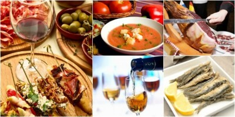

TRADICIÓN ANDALUZA EN TU MESA
PLATOS TRADICIONALES
CARNES Y GUISOS

PESCADOS Y MARISCOS
APERITIVOS Y TAPAS
Acerca de Nosotros
Bienvenidos a Restaurante Andalucía, un espacio donde la tradición y el sabor de nuestra tierra se unen para ofrecer experiencias gastronómicas inolvidables. Nuestro restaurante nació con la pasión de recuperar los auténticos sabores andaluces y compartirlos con todos nuestros clientes.
En nuestra cocina utilizamos productos locales y de temporada, seleccionados cuidadosamente para garantizar frescura y calidad en cada plato. Desde los gazpachos y salmorejos refrescantes hasta los guisos más tradicionales, cada receta refleja la riqueza y diversidad de Andalucía.
Nuestro equipo está formado por profesionales apasionados que combinan creatividad y respeto por la tradición. Cocineros, camareros y todo el personal trabajamos con un objetivo común: ofrecer una experiencia gastronómica auténtica y cercana.
Cada visita a nuestro restaurante es una celebración de la gastronomía andaluza. Nos esforzamos por brindar un servicio atento y un ambiente acogedor, haciendo que todos nuestros clientes se sientan como en casa.